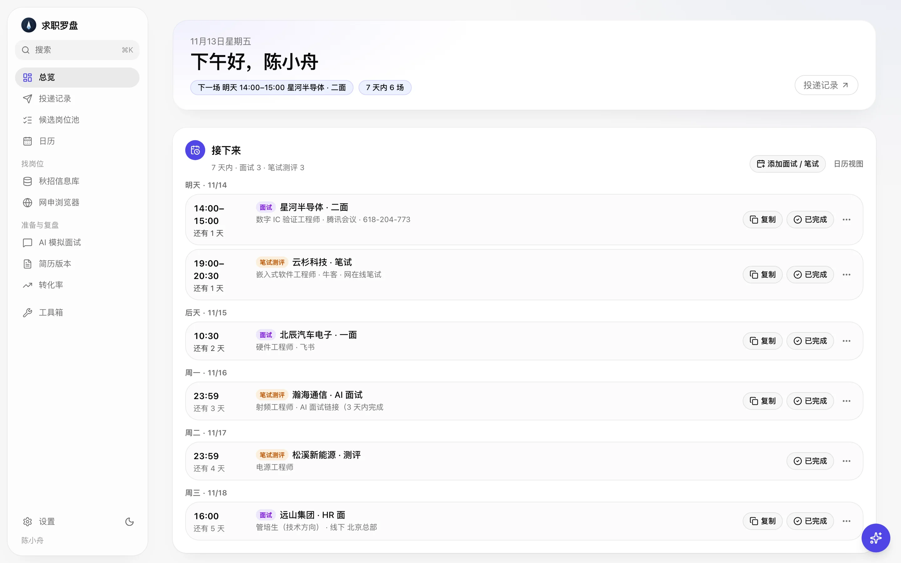
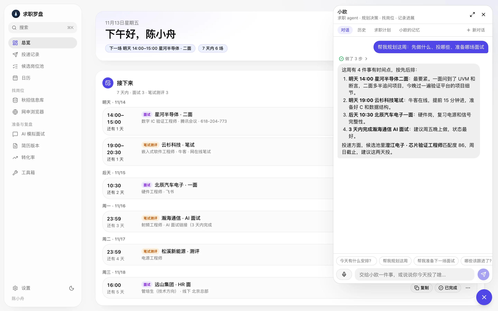
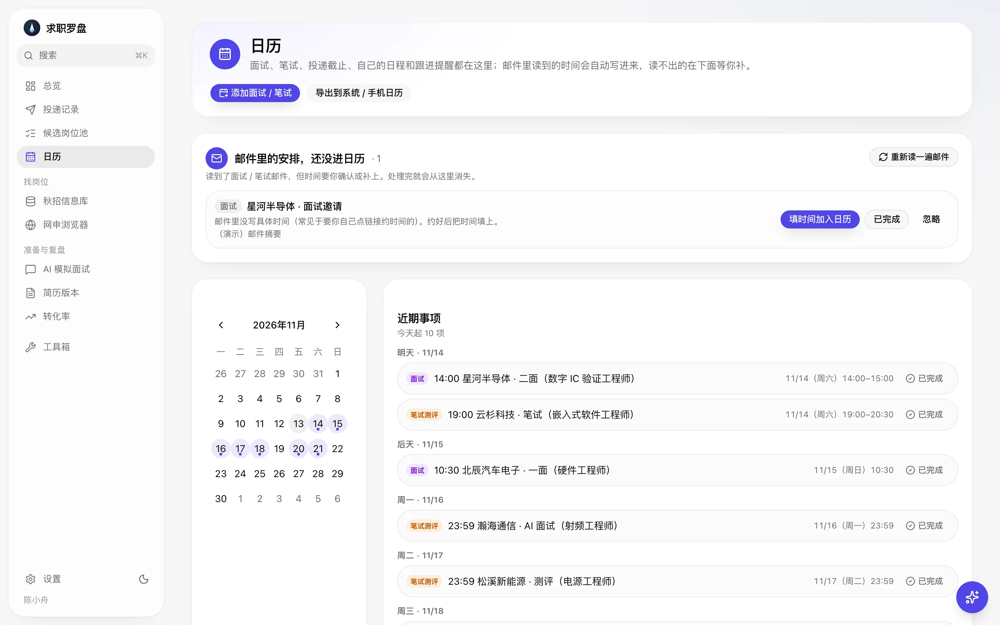
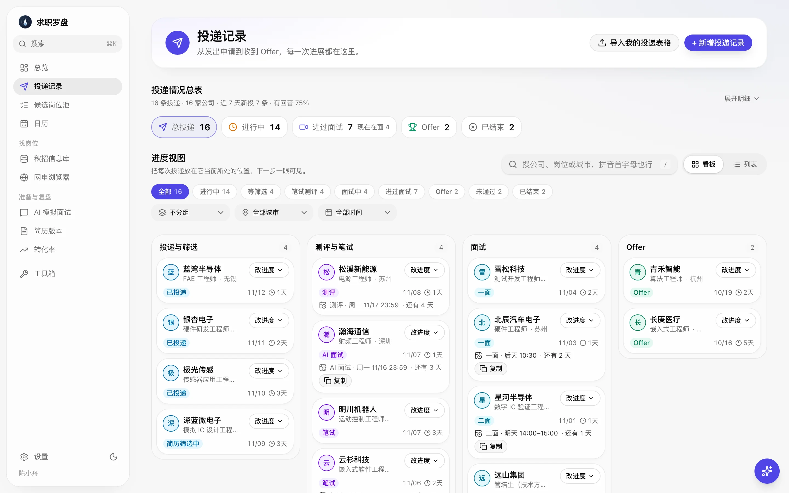
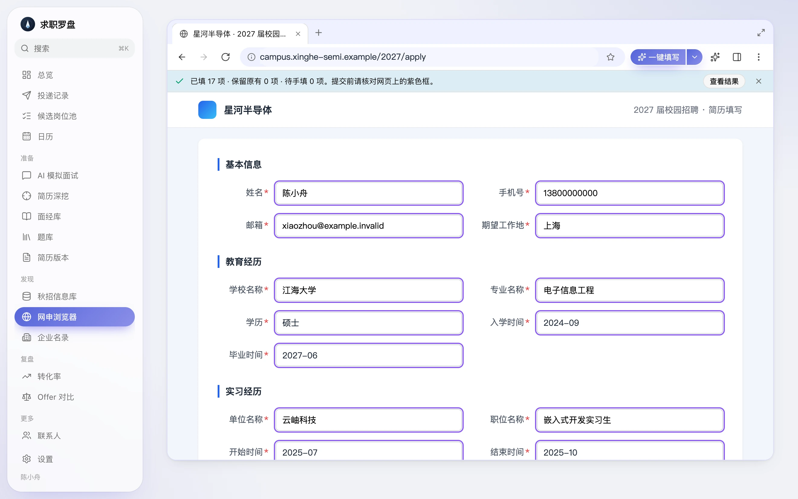
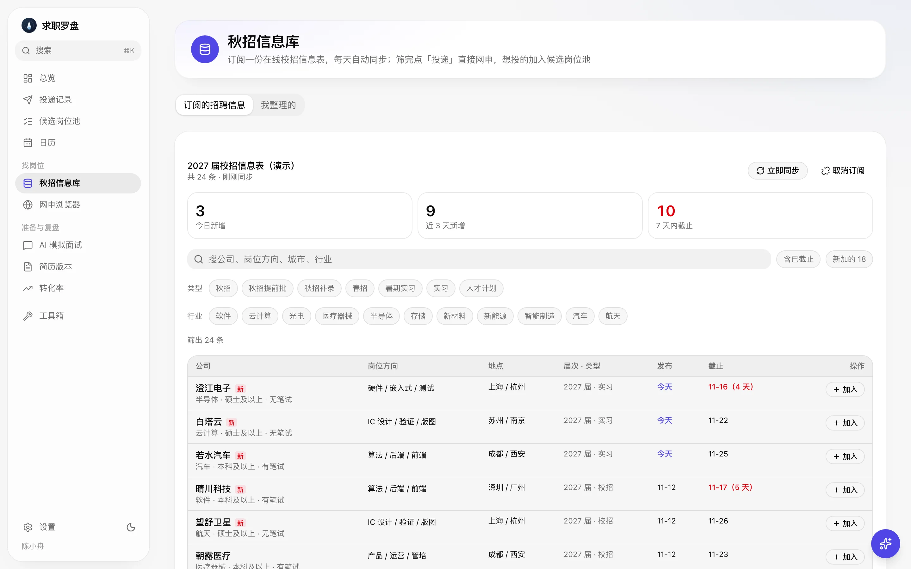
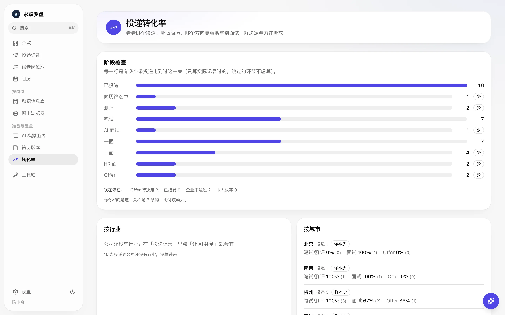
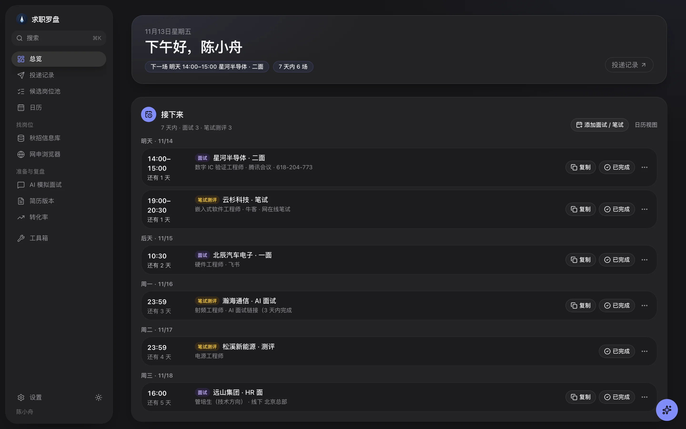

给秋招的桌面软件 · Mac / Windows
秋招的每一件事，
一个软件替你盯着。
AI 助手小欧帮你排计划、查资料；招聘邮件自动读进日历；网申表单一键填好。数据只存在你自己的电脑上。

新小欧逐字回答边想边写，不用干等
新网申逐段保存项目、获奖自动添加一段存一段
新邮件补时间没认出来的，改一下就进「接下来」
新深色模式苹果式灰色层次
AI 助手 · 小欧
说一句话，它自己去查、去排。
小欧能读你的投递、日程、候选岗位和简历，也能上企业官网找岗位、联网查资料。说「帮我规划这周」，它会先查清楚再给结论；要改记录时给你按钮，你点了才保存。

边查边答同时查几样资料，回答逐字出现。上一轮查到的投递会记住，追问时不用重新查。
记得你说过的城市、方向、底线会记进「小欧的记忆」，每次都带上；记错了可以删。
写开放题在网申页面旁边打开，按你的经历起草回答，点「填进这一栏」才会填进去。
读邮件
面试邀请，不用再抄进日历。
绑上邮箱，软件会读招聘邮件，把面试、笔试、测评排进日历和「接下来」，并更新那条投递的进度。
- 笔试时间、测评截止、会议链接都认得出；面完一轮再来的邀请，算下一轮
- 邮件没写时间的，补上时间、选好是哪条投递和哪一轮，就加进「接下来」
- AI 判成无关、但像面试或 offer 的邮件，会留成「可能相关」让你看一眼
- 每次自动更新都能撤销，不会改掉你自己填的

投递记录
每家公司到哪一步，一眼看清。
看板按阶段排开，有面试的卡片直接显示倒计时；总表上方是投递、面试、Offer 的数字，点一下就筛选。
- 在网申浏览器里投完自动记录：公司、岗位、城市、用的哪份简历，都带上
- Excel 投递表一键导入；按城市、公司、行业、时间分组，拼音首字母也能搜
- 没写城市的投递，可以让软件读 JD、联网查出来补上

网申浏览器
网申表单，填一次就够。
软件里自带一个像 Chrome 的浏览器。打开企业网申页点「一键填写」，基本信息、教育、实习、项目、获奖按你的资料填好，填过的框用紫色标出。
- 项目经历、获奖要点「添加」一段段填的，自动添加、填好、只点这一段的「保存」，再填下一段；绝不点提交
- 北森、Moka、飞书招聘、51job 等常见系统的下拉、日历、学校选择框都认得
- 分好几页的申请，翻页后自动接着填；资料里没有的，标成「待手填」交给你
- 也有 Chrome 插件，在你平时的浏览器里一样能填

找岗位
群里的校招大表，
直接订阅进来。
贴上在线校招信息表的链接，软件每小时看一次有没有更新，新加的行标「新」。按行业、城市、届别筛完，点「加入」放进候选池，再一键去网申。

复盘与外观
看清卡在哪一关，
白天黑夜都好看。
转化率只统计真正记录过的阶段，样本太少不乱下结论。界面有四种风格、六套配色，深色模式用苹果式的灰色层次，配色只点缀在按钮上。


还有这些。
AI 模拟面试按岗位出题、打分、给更好的答法；简历深挖会顺着你的项目一路追问。
按 JD 改简历原来的版式不变，只改几句话；在 A4 预览里改完，存成新的简历版本。
候选岗位池还没投的岗位放一起，看匹配度和截止日，准备好就一键去网申。
面经库和题库面完记两句，自动整理成题目；复盘时看每一类题答得怎么样。
Offer 对比薪资、城市、通勤、加班一起比，不只看月薪。
战绩卡投递、面试、Offer 的数字做成一张竖版图，公司名默认不写。
每日简报小欧每天打开时写一份今天要做的事，每周一份复盘。
桌面提醒小日历、便利贴、提醒邮件；日历能导出到手机。
心路历程写给自己看的求职日记，只存在你的电脑上。
隐私
你的数据，留在你的电脑上。
投递记录、简历、邮件结果都存在本机。没有注册，没有云端账号。
用 AI 功能时，内容只发给你自己配置的 AI 服务商，用的是你自己的 Key。
网申浏览器从不替你点「提交」或「投递」，最后一步永远是你来点。
支持定时自动备份，换电脑时导出再导入。源码公开。
下载求职罗盘
免费使用
Mac：打开 dmg，把软件拖进「应用程序」再打开。首次打开如果提示无法验证开发者，到「系统设置 → 隐私与安全性」里点「仍要打开」。目前只有 Apple 芯片（M 系列）的版本。
Windows：双击安装包即可。如果出现蓝色的 SmartScreen 提示，点「更多信息 → 仍要运行」。
更新：装好以后，有新版本时软件会提示，点一下就升级，数据不会丢。
AI 功能：小欧、模拟面试、改简历要用你自己的 AI Key（支持 Gemini、DeepSeek、通义千问、Kimi、智谱、Claude 等），在设置里填一次即可。不配也能用其余功能。